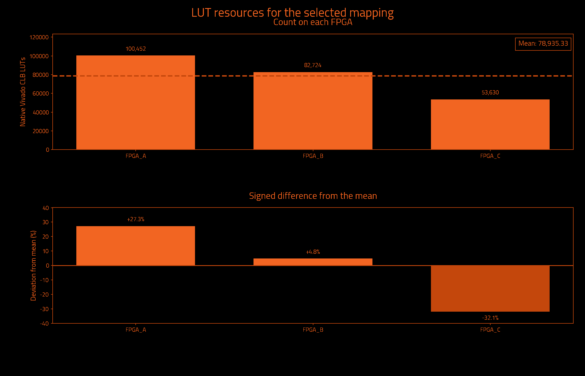
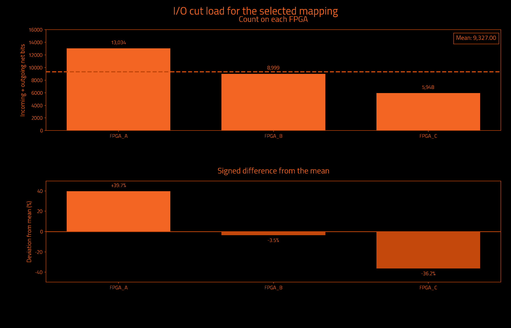
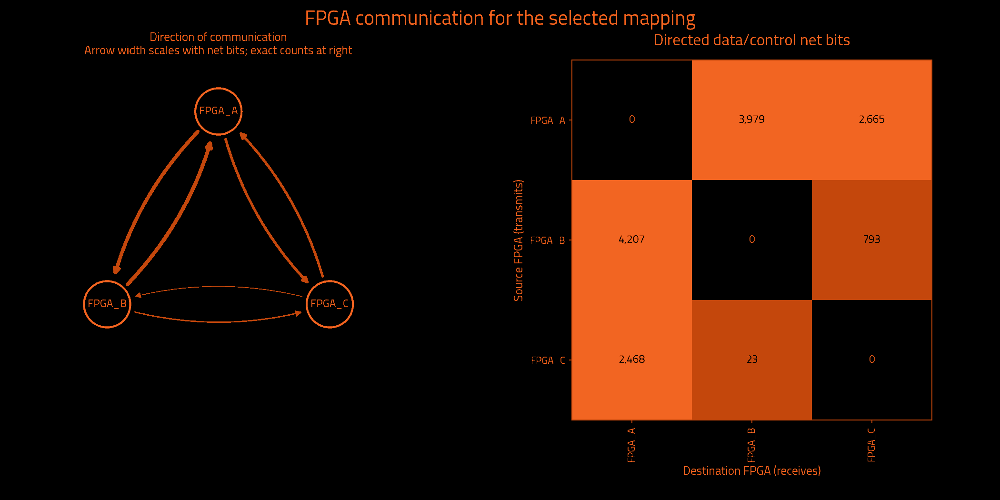

Historical measurements preserved by exact ownership equivalence · mapping.txt
Historical metrics preserved by exact ownership equivalence; not a fresh Vivado measurement.
| Selected partition | Result | Search | Result |
|---|---|---|---|
| FPGAs | 3 | Iterations requested | Unavailable |
| Native Vivado CLB LUTs | 236,806 | Iterations attempted | 5 |
| Unique data/control cut net bits | 13,846 | Selected iteration (zero-based) | 2 |
| Directed data/control net-bit pairs | 14,135 | Target board | j4.phd |
| Measurement | Result | Measurement | Result |
|---|---|---|---|
| Wall time | Unavailable | Observed CPU time | Unavailable |
| Average CPU cores | Unavailable | Average CPU use (one core = 100%) | Unavailable |
| Peak sampled process-tree memory | Unavailable | Frontend peak memory | Unavailable |
| Child processes observed | Unavailable | Sampling interval | Unavailable |
Measured through: Unavailable. CPU covers the frontend and observed descendants; sampling can miss short-lived work. Process-tree memory sums may count shared pages more than once.
No runtime measurement supplied.
Observed CPU time is a lower bound when short-lived processes escape sampling. Windows-host sampling excludes work inside WSL. Process-tree memory sums may count shared pages more than once.
| Logical FPGA | Native Vivado CLB LUTs | Device LUT utilization | Hard LUT cap | Outgoing net bits | Incoming net bits | Total I/O net bits |
|---|---|---|---|---|---|---|
| FPGA_A | 100,452 | 1.187% | 102,587 | 6,359 | 6,675 | 13,034 |
| FPGA_B | 82,724 | 0.978% | 102,587 | 4,997 | 4,002 | 8,999 |
| FPGA_C | 53,630 | 0.634% | 102,587 | 2,490 | 3,458 | 5,948 |
| Logical FPGA | Target device | Registers | Block RAM tiles | DSP blocks | UltraRAM blocks |
|---|---|---|---|---|---|
| FPGA_A | xcvp1902 | 101,755 | 4.0 | 0 | 0 |
| FPGA_B | xcvp1902 | 79,973 | 0.0 | 0 | 0 |
| FPGA_C | xcvp1902 | 50,813 | 0.0 | 0 | 0 |



| Measurement | Before local cleanup | Selected result |
|---|---|---|
| Worst minimum physical link hops without a register | 4 | 3 |
| Worst FPGA boundary crossings without a register | 4 | 3 |
| Extra crossings summed over modeled endpoints | 151,904 | 30,604 |
| Combinational primitives on transit paths | 7,839 | 7,723 |
| Directed hypergraph transfers | 13,001 | 14,133 |
| Sampled source timing paths scored | Unavailable | 1,000 |
| Weighted cost on sampled source timing paths | 216.99802416768262 | 216.99802416768262 |
| Signal category | Unique crossing net bits | Directed net-bit pairs |
|---|---|---|
| Data and functional synchronous control | 13,846 | 14,135 |
| Clock only | 1 | 2 |
| Reset only | 90 | 90 |
| Iteration | Result | Worst register-free crossings | Extra endpoint crossings | Transit primitives | Hypergraph transfers | Utilization imbalance |
|---|---|---|---|---|---|---|
| 0 | Rejected: hard LUT cap exceeded | 3 | 27,991 | 6,690 | 13,815 | 32.90% |
| 1 | Not selected | 4 | 23,604 | 5,141 | 14,133 | 28.07% |
| 2 | Selected best accepted mapping | 3 | 30,604 | 7,723 | 14,133 | 27.26% |
| 3 | Rejected: Command failed (1); C:\Users\Wrelks\Desktop\upgrade_partitioner_handle_large_designs\work\a5e\k3\v5a\candidate_03\partition.log + Label Propagation = 0.186812 s + Rebalance = 0.0160176 s + Initialize FM Refiner = 1.76e-05 s + FM = 40.8098 s + Initialize Data for Unc. FM = 0.0151376 s + Collect Border Nodes = 0.0184798 s + Find Moves = 40.7733 s + Rollback to Best Solution = 0.0022287 s + Projectin… | Unavailable | Unavailable | Unavailable | Unavailable | Unavailable |
| 4 | Rejected: Command failed (1); C:\Users\Wrelks\Desktop\upgrade_partitioner_handle_large_designs\work\a5e\k3\v5a\candidate_04\partition.log + Label Propagation = 0.272442 s + Rebalance = 0.0763452 s + Initialize FM Refiner = 1.95e-05 s + FM = 39.561 s + Initialize Data for Unc. FM = 0.0136269 s + Collect Border Nodes = 0.0130009 s + Find Moves = 39.5328 s + Rollback to Best Solution = 0.0010267 s + Projecting… | Unavailable | Unavailable | Unavailable | Unavailable | Unavailable |
| Measurement | Meaning |
|---|---|
| Worst minimum physical link hops without a register | Lower bound from the declared topology, not a routed transport path. |
| Worst FPGA boundary crossings without a register | Largest ownership-change count on a modeled combinational path. |
| Extra crossings summed over modeled endpoints | Crossings beyond the first, summed over endpoints; not a distinct-net count. |
| Combinational primitives on transit paths | Logic that receives and forwards a remote signal without register capture. |
| Directed hypergraph transfers | Destination partitions beyond the first, summed over modeled hyperedges. |
| Sampled source timing paths scored | Exported Vivado timing samples, not all-path timing closure. |
| Weighted cost on sampled source timing paths | Relative ranking cost, not measured transport delay or DUT frequency. |
I/O cut load counts one outgoing multicast net once at its source and once at each receiving FPGA. Clock-only and reset-only nets are separate. Counts describe logical payload, not physical package pins or a pinmux ratio. External top-level ports have no invented FPGA home. Hypergraph transfers differ from the full net-bit census.
Deviation is 100 × (FPGA count / mean − 1); all-zero designs have 0% deviation. Device utilization and hard LUT caps are separate. Before local cleanup means this selected candidate before refinement, not necessarily the first iteration. More iterations can improve a result; the best accepted candidate is retained.
Timing sample coverage: exported sampled native setup paths only; not all-path STA. Path model: primitive conservative data arcs; top IO has no FPGA home. These are source-model measurements, not achieved hardware timing.
| Logical FPGA | Physical location | Selected direct neighbors |
|---|---|---|
| FPGA_A | C01/S01/E | 2 |
| FPGA_B | C01/S01/F | 2 |
| FPGA_C | C01/S01/G | 2 |
| FPGA | Neighbor | Declared lanes | Wires at topology minimum compression |
|---|---|---|---|
| FPGA_A | FPGA_B | 16 | 1,024 |
| FPGA_A | FPGA_C | 16 | 1,024 |
| FPGA_B | FPGA_C | 16 | 1,024 |
The communication matrix shows signal demand. Declared links guide optimization; transport routing and physical bandwidth allocation happen later.
Resources describe original synthesized logic; future wrapper and transport resources are excluded. Mapping format, ownership and hard capacity checks are acceptance gates. Downstream regroup and hardware validation are separate.
{
"status": "HISTORICAL_METRICS_PRESERVED_BY_EXACT_OWNERSHIP_EQUIVALENCE",
"backend_version": "1.6.2",
"partition_preset_requested": "default",
"frontend_sha256": "d4dd69ef7849e0e5770e1ea0173f2106b1f1ec13ccc9303f7e8eaf9f3bc7237c",
"native_timeout_seconds": 7200.0,
"native_timeout_scope": "persistent checkpoint startup and each resource request; batch commands unaffected",
"topology_sha256": "283769d8f5d4bbfe2299e491c060893fc11b71e6fc2b0aac29338e97ec45ac53",
"topology_source_sha256": "6f393e7eee76cbf20cd96e46f52c8c0a34be2365c7222aa6cf7abfe87c7e1b83",
"fpga_count": 3,
"native_backend_invoked": true,
"preferred_native_balance": 0.2,
"selection_policy_version": 3,
"native_balance_absolute_tolerance": 1e-12,
"effective_solver_epsilon": 0.3,
"effective_refiner_scalar_balance": 0.3,
"native_balance_search_envelope": 0.3,
"target_capacity_dependency_manifest_sha256": "18a3ac71857350176b8d15449e6cf21f106a9c902bd439a5a7d9d722c218d2c3",
"target_capacity_dependencies_sha256": {
"C:\\Users\\Wrelks\\Desktop\\upgrade_partitioner_handle_large_designs\\RapidWright\\scripts\\partition\\target_capacity.py": "652db231c4c19cfb2aa7bea140c1184d6f51162be857358b94152b3a2661f992",
"C:\\Users\\Wrelks\\Desktop\\upgrade_partitioner_handle_large_designs\\topologies\\j4_board_topology.json": "6f393e7eee76cbf20cd96e46f52c8c0a34be2365c7222aa6cf7abfe87c7e1b83",
"C:\\Users\\Wrelks\\Desktop\\upgrade_partitioner_handle_large_designs\\topologies\\j4_board_topology.json.targets.json": "25db82ebe61166d1d1998042eaa07ad9c843238119e5dd6e16e70695249afcd4",
"C:\\Users\\Wrelks\\Desktop\\upgrade_partitioner_handle_large_designs\\RapidWright\\scripts\\partition\\part_catalog\\vivado_2025_1_parts.tsv": "a402de944fbd660743f6a7ff12403060e886627439826186600da78618e6a1fe",
"C:\\Users\\Wrelks\\Desktop\\upgrade_partitioner_handle_large_designs\\RapidWright\\scripts\\partition\\part_catalog\\vivado_2025_1_parts.tsv.identity.json": "c5937f61bb02a289745eee9e8cc359b56692ed908e206cf549830da035957707"
},
"effective_logical_balance": 0.5,
"logical_balance_policy": "automatic_uniform_or_unspecified_native_caps",
"logical_balance_requested": null,
"logical_resource_capacities_explicit": false,
"engine_manifest_sha256": "b64272b8c469cffdf98ea76b1afcae5799a0fa0bc63d855ece820af18d841f8a",
"source_pair_association": {
"version": 1,
"mode": "supplied_manifest_legacy",
"original_receipt": "C:\\Users\\Wrelks\\Desktop\\upgrade_partitioner_handle_large_designs\\LSUT_2\\work\\partition_experiment\\aes64_96951b4_reference\\export_receipt.json",
"receipt_snapshot": "C:\\Users\\Wrelks\\Desktop\\upgrade_partitioner_handle_large_designs\\work\\a5e\\k3\\v5a\\inputs\\source_pair_receipt.json",
"original_receipt_sha256": "51706b8a9698d70d0b4b27916824b373e4d04003fe5670dbd1d3e8bd9ba2b9dd",
"receipt_snapshot_sha256": "51706b8a9698d70d0b4b27916824b373e4d04003fe5670dbd1d3e8bd9ba2b9dd",
"input_edif": "C:\\Users\\Wrelks\\Desktop\\upgrade_partitioner_handle_large_designs\\LSUT_2\\work\\partition_experiment\\aes64_96951b4_reference\\post_synth.edf",
"input_edif_sha256": "7fc2948596c3830462964176aa70a8cc2c794cb0c77c0b7a3d30adb6924a8d78",
"checkpoint": "C:\\Users\\Wrelks\\Desktop\\upgrade_partitioner_handle_large_designs\\LSUT_2\\work\\aes_farm\\partition_input_c64_96951b4\\mapped.dcp",
"checkpoint_sha256": "b70f97edb03784c4c50bf3d5de1c434666f8929e9acdb2f9d4de2e77a8933300",
"native_primitives": "C:\\Users\\Wrelks\\Desktop\\upgrade_partitioner_handle_large_designs\\LSUT_2\\work\\partition_experiment\\aes64_96951b4_reference\\leaf_primitives.tsv",
"native_primitives_sha256": "6ab9a32004084fa5edf922a5e353fbc3b101a00063cd318309d4fa31fd152fa3",
"producer_evidence_verified": false,
"export_run_association": "Supplied PASS manifest asserts one export association; producer command, actual native exit0 and completion are not verified",
"scope": "Exact payload and receipt-byte consistency; no arbitrary EDIF/checkpoint electrical-equivalence or cryptographic-authenticity proof"
},
"source_pair_provenance_sha256": "b85205e71e15db9d5c79d13575718177b4590e70f57bf8ef9b8c759908b6d426",
"java_heap": "16G",
"expanded_native_leaf_count": 517544,
"timing_guidance": "sampled_source_STA",
"timing_paths_sha256": "a02b76c832188b1d274719404fb4bc193374bac7e8d14b7f6b9b90df68af4f38",
"extra_delay_ns_per_crossing": null,
"native_artifact_storage": "verified_lossless_compression",
"native_oracle_mode": "persistent_original_checkpoint",
"native_residency_policy": "Probe after Java; retain only when measured available RAM covers the next heap, 8 GiB overhead and a prior-HGR native solver reserve",
"native_residency_decisions": [
{
"iteration": 0,
"stage": "after_java",
"available_bytes": 109255618560,
"decision": "load_native_probe"
},
{
"iteration": 1,
"stage": "before_java",
"available_bytes": 106907578368,
"prior_hgr_bytes": 14137615,
"native_solver_reserve_bytes": 2599887328,
"decision": "retain"
},
{
"iteration": 2,
"stage": "before_java",
"available_bytes": 105804595200,
"prior_hgr_bytes": 14293894,
"native_solver_reserve_bytes": 2604888256,
"decision": "retain"
},
{
"iteration": 3,
"stage": "before_java",
"available_bytes": 105932201984,
"prior_hgr_bytes": 14293894,
"native_solver_reserve_bytes": 2604888256,
"decision": "retain"
},
{
"iteration": 4,
"stage": "before_java",
"available_bytes": 105665658880,
"prior_hgr_bytes": 14293894,
"native_solver_reserve_bytes": 2604888256,
"decision": "retain"
}
],
"native_oracle_scripts_sha256": {
"C:\\Users\\Wrelks\\Desktop\\upgrade_partitioner_handle_large_designs\\RapidWright\\tools\\native_resource_session.py": "caa467021ca9a907b233f52d086d2a5858b08111ba950b718273964f36bd0ca5",
"C:\\Users\\Wrelks\\Desktop\\upgrade_partitioner_handle_large_designs\\RapidWright\\tools\\resource_session.tcl": "dc660b593517075ee79bc42487cdeff95b075cc8f1fc1edbd041e05d9ba17d2a",
"C:\\Users\\Wrelks\\Desktop\\upgrade_partitioner_handle_large_designs\\RapidWright\\tools\\report_partition_resources.tcl": "255ddb495ba953f77a19a373481cbfbde7ca2f127c6f595764b2a101a817ef38",
"C:\\Users\\Wrelks\\Desktop\\upgrade_partitioner_handle_large_designs\\RapidWright\\tools\\archive_native_request.py": "1053024a0794942eeb12bcdd77827541220f05d7355089f8113cac90f42eeb6b"
},
"capture_cohort_cleanup": {
"requested": "off",
"effective": "off",
"backend_supported": true,
"reason": "requested_off"
},
"native_feedback_quality_guard": "accepted_mapping_anchor",
"quality_guard_policy": "ranked",
"minimum_link_hop_analysis_available": true,
"selected_iteration": 2,
"native_cap_check": "PASS",
"native_balance_target_met": false,
"preferred_native_balance_target_met": false,
"native_search_envelope_met": true,
"new_policy_complete_within_search_envelope": true,
"source_input": "C:\\Users\\Wrelks\\Desktop\\upgrade_partitioner_handle_large_designs\\LSUT_2\\work\\partition_experiment\\aes64_96951b4_reference\\post_synth.edf",
"source_sha256": "7fc2948596c3830462964176aa70a8cc2c794cb0c77c0b7a3d30adb6924a8d78",
"checkpoint_sha256": "b70f97edb03784c4c50bf3d5de1c434666f8929e9acdb2f9d4de2e77a8933300",
"native_inventory_sha256": "6ab9a32004084fa5edf922a5e353fbc3b101a00063cd318309d4fa31fd152fa3",
"hard_native_clb_lut_caps": {
"FPGA_A": 102587,
"FPGA_B": 102587,
"FPGA_C": 102587
},
"selection_policy": "Hard capacities and one cut/topology budget; complete paths; worst minimum-link hop lower bound, logical register-free crossings, sampled source timing cost, endpoint excess, transit; native search-envelope limitation tier, transfers, topology cost, then fine balance; preferred balance remains soft",
"minimum_link_hop_scope": "Declared selected adjacency shortest-link lower bounds; not actual transport routing, congestion or nanoseconds",
"scope": "Original synthesized netlist subset utilization; no future wrapper/transport resources included",
"accepted_mapping_sha256": "bd809f8d164fc8922ca00e74a0d3bb1ad0a32ef169cdf0aadf0166af73f3930b",
"historical_metrics_scope": "Original native and source-graph measurements preserved by exact ownership equivalence; not rerun"
}{
"vivado_resources.tsv": "7facb92771411619deb391eb554418ed9a3a9f81f158e8abebf852626d2e5375",
"lut_report.txt": "1a398ab97bf3819c9de2d53c2a5196b66cab10bebc1faee4b5fe07485d7453ae",
"fpga_control_categories.tsv": "484c24ab5d464ce940d64b07fc03bdd8060b1cdd96702b83d205978fccd68b08",
"hardware_quality.txt": "2a6075ef8dec9031d117a4c98a39619bb1f1d1662cf95a2b5d2a6712284165bd",
"run_provenance.json": "d4698f43ae33b280f45212be4cf25508021a9d3991019e4a52fb7d3f10250442",
"target_capacity.json": "b208ab5f1b8ef313f8f1fa2bb8a14bf67443b4926153c2b2511686c382438c87",
"native_lut_caps.tsv": "a163e0326abd57fe3f3d39287df58798d60ce55c48ce3b02f1f23050421ed1c6",
"cells.txt": "5cfe9781ac2b8c95a631ae49d33f3f6fdbc8c06b4040df71d9a995710da55a3b",
"topology_manifest.json": "3e1a64ae85d44a24bdacdc9c4f5cf37c3e140c6496e6110210ee78f73af50d7d"
}{
"status": "HISTORICAL_METRICS_PRESERVED_BY_EXACT_OWNERSHIP_EQUIVALENCE",
"fresh_native_measurement": false,
"historical_mapping_sha256": "206ec1934041f63b0d98c27c1ba9357ba4d7c76832c288b234853746a5c501b6",
"successor_mapping_sha256": "bd809f8d164fc8922ca00e74a0d3bb1ad0a32ef169cdf0aadf0166af73f3930b",
"functional_leaves_compared": 517282,
"ownership_mismatches": 0,
"top_port_owner_unchanged": true,
"source_edif_sha256": "7fc2948596c3830462964176aa70a8cc2c794cb0c77c0b7a3d30adb6924a8d78",
"source_checkpoint_sha256": "b70f97edb03784c4c50bf3d5de1c434666f8929e9acdb2f9d4de2e77a8933300",
"proof_files_sha256": {
"prior_native_evidence.json": "5fa9f67a1b462cb647315462f88d268503872b4fd96ef8b0c4953def91d154cf",
"reencoding_equivalence.json": "e759862033184df9374c640293d0ffb88cef6cdf28937da81b27677511a3b8b4",
"mapping_contract.json": "bc2233d953c0a98aafefae613baa9a701b9654740e66da9ee3dc773dd87ef27b",
"mapping_records.tsv": "94e5de4c27dc07d4279de49e1f6a468170bdce327feade7f5f8201388b4fc88d",
"mapping_ownership.tsv.gz": "f1a5e475fe221f9c7fc9dd81c4a30731cf4cab08a3ba4da3c46d07be2949691c"
},
"historical_artifact_sha256": {
"cells.txt": "5cfe9781ac2b8c95a631ae49d33f3f6fdbc8c06b4040df71d9a995710da55a3b",
"endpoint_kind_diagnostic.tsv": "2594e75c18d8ee32ba9c60001720c4eb42da44f0c5527f46e90be6f0ae70c869",
"final_assignment.part": "7b7cab5975c79e69fdf09aae212bbcbeef4d42dfd4bcf07d8ef14be3a4c59df2",
"fpga_control_categories.tsv": "484c24ab5d464ce940d64b07fc03bdd8060b1cdd96702b83d205978fccd68b08",
"fpga_devices.tsv": "6c7187bec6802b2f569f8cf274073a1720353c74c8b176c7e72ae2159b9e5183",
"fpga_io_cuts.txt": "a5c8dd121b23df562ef41f6567d9fbe2bda7f2ae5a4cdb1ac03595f765f3b49a",
"fpga_net_crossings.tsv": "600a69481278529b7e6b4bd6d21de5e22e7e6c3020885588b434c907ca304f76",
"hardware_quality.txt": "2a6075ef8dec9031d117a4c98a39619bb1f1d1662cf95a2b5d2a6712284165bd",
"identity.json": "dbd24805400bf5e3666dbc48deefe048fa9a1415132d8525858e89d2894a1043",
"io_cuts.txt": "a64e1af04f8998155a82af9c99216d948d4b52c80dc59d1b6cf87792ca1180b7",
"logical_lut_report.txt": "af6604f9bb89ffd5c77737f275946432d20e3b8c3935affe7d2c4e969f8c3d71",
"logical_resources.tsv": "5dcddecf5b5cb95d977f02f6d9ab82816ba9b2ca65853a0fefa7ec685df71d0a",
"lut_report.txt": "1a398ab97bf3819c9de2d53c2a5196b66cab10bebc1faee4b5fe07485d7453ae",
"mapping.txt": "206ec1934041f63b0d98c27c1ba9357ba4d7c76832c288b234853746a5c501b6",
"metric_definitions.txt": "28c1e87b6c622b819cb9908f3ad9f58277331314f7be645e2b80c10d99238ba8",
"native_candidates.tsv": "52d14709eb7c1507d1b5945c6cd289efee7605f3d535ce110c42e8d5a14b05ee",
"native_complete.txt": "ee1b9e8b04f1d910382cf7f90ed7c2285e9de4475d00024a35540f3a3ad75f47",
"native_lut_caps.tsv": "a163e0326abd57fe3f3d39287df58798d60ce55c48ce3b02f1f23050421ed1c6",
"parity_audit_final/00_complete_cut_category_parity.json": "8372e0b7ffd5b5a42904cdcefa93681fe13f8b78d81c37a36e6f3ebacb26f01d",
"parity_audit_final/01_comparison_receipt.json": "900d6eb9e55b048b02e1b3647031a2c9020a8364cc923881c016503fdcddb5e9",
"parity_audit_final/02_root_compare_k3_v5a.json": "a1e235e5f5bd76e3bc95cf595ceb81d60560e0d4a45401da5d59afd573db71eb",
"parity_audit_final/03_metadata_receipt.json": "da3a54f37cd8e4a7b136e345c21f368cf4fa19f3ff53cc0a20309934048f98a2",
"parity_audit_final/04_comparison_inputs.json": "c2eb4eb020812eb41d1082d29aa44a4dd6979069f5a30160779521e062a9a408",
"parity_audit_final/05_owned_process_receipt.json": "c35b0e1ef9c9a60f8073320fb0094b5bf91cf40c4bfbb1b683a6ed5680d16b66",
"parity_audit_final/compact_mapping_audit.json": "e1e49e2ccf23de3924c1197720f37c1843b7d2c02c10b468546759054baa480c",
"parity_audit_final/identity_receipt.json": "18b912d7f0ca89b73d274454753d30bbe544c418ddeced6b8bf089a5ad5541f0",
"primitive_counts.tsv": "034ee8a3e347d134357be6897115efd530da6a9ebfd7e75ff4eec5856390f787",
"QUALIFICATION.json": "134b3938ed1c07816eb560f39adf61de6ad46a07bd379a8d580d7afe24dd7e2f",
"refinement_passes.tsv": "68418d9329c7f546ea2809a1b9a3a8714f7f03cfa48da846c386884f558de99f",
"run_provenance.json": "d4698f43ae33b280f45212be4cf25508021a9d3991019e4a52fb7d3f10250442",
"source_mapping.txt": "206ec1934041f63b0d98c27c1ba9357ba4d7c76832c288b234853746a5c501b6",
"STATUS.json": "80d8a059f4e719788e8c3ae045165b05cce92833449809c3023374786e900eaa",
"swap_refinement_passes.tsv": "6acc0a2098f52118afdedd88e63a4ebeadd873cf289ac7cd0bb5e3d84892d60e",
"target_capacity.json": "b208ab5f1b8ef313f8f1fa2bb8a14bf67443b4926153c2b2511686c382438c87",
"target_capacity_dependency_manifest.json": "18a3ac71857350176b8d15449e6cf21f106a9c902bd439a5a7d9d722c218d2c3",
"topology_manifest.json": "3e1a64ae85d44a24bdacdc9c4f5cf37c3e140c6496e6110210ee78f73af50d7d",
"vivado_resource_summary.txt": "64820ae08ae72023f6aaba94c6bc32706ae6099d806b9d3314985cbc6bfb9267",
"vivado_resources.tsv": "7facb92771411619deb391eb554418ed9a3a9f81f158e8abebf852626d2e5375",
"worst_combinational_path.tsv": "46bdf514d51437227f5dd048998c51659806780749ab12e48f65ed4cede148fc"
},
"historical_metrics_directory": "C:\\Users\\Wrelks\\Desktop\\upgrade_partitioner_handle_large_designs\\RESULTS FOR J4\\AES_FARM\\3 FPGAS",
"scope": "Historical source-netlist resource and connectivity measurements preserved by checked exact functional ownership and top-port owner equivalence; no new Vivado, regroup, wrapper or hardware validation"
}